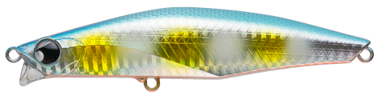
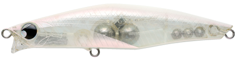
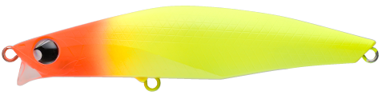
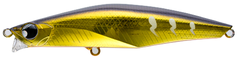

バンク120S
（リップ付きシンキングペンシル）
バンク120S（BANQ120S）はPOP SEA CREW（ポップシークルー）のリップ付きシンキングペンシルです。
河川だけでなくあらゆるフィールドを広範囲にカバーできる飛距離を持ち、特に大型シーバスを狙いたい時に活躍する120mmモデル。ショートリップが高足場や横風の悪条件でもレンジとアクションをキープしてくれるのが最大の魅力です。

画像出典:POP SEA CREW公式HP
スペック
- メーカー
- POP SEA CREW（ポップシークルー）
- タイプ
- シンキングペンシル（リップ付き）
- 全長
- 120mm
- 自重
- 46g
- フック
- #1
- リング
- #4
- アクション
- スラローム
- レンジ
- 20〜100cm
- ターゲット
- シーバス
- 価格
- 2,893円（税込）
▼今すぐチェック

バンク120Sの特徴
飛距離・レンジキープ・ランカー対応の強さを1本にまとめた、大型シーバス狙いのリップ付きシンペン
-
重心移動システムで飛距離と素早い動き出しを両立
重心移動システムが移動ウエイトを制御し、抜群の飛距離と着水直後の素早い動き出しを実現。河川だけでなく、あらゆるフィールドを広範囲にカバーできる。
-
ショートリップで悪条件でもレンジ・アクションをキープ
ショートリップの搭載で着水直後からしっかり水を掴み、高足場や横風を受ける状況でも流されにくい。流れの変化や抵抗を捉える感度も高く、スローリトリーブでは流れが遅くても速くても安定したスラロームアクションとレンジを保つ。
-
ランカー対応の大型フックを搭載
#1の大型フックを搭載し、大型シーバス狙いや強引なファイトを強いられる状況でも安心して使える。インパクトのあるボディから出る艶めかしいスラロームで大型魚を誘う。
バンク120Sの使い方
基本はスローリトリーブ。ショートリップが着水直後から水を掴むので、着水したらすぐに巻き始めてもアクションが立ち上がり、スローピッチのスラロームでじっくり見せて食わせる。
レンジは20〜100cm。深いレンジを通したい時は着水後にカウントを取ってから巻き始め、浅いレンジを通したい時はロッドを立て気味にして巻くとレンジを調整しやすい。流れの効いた場所では、流れに対して斜めに投げて抵抗の変化を感じながら引いてくるのが基本の組み立てです。
バンク120Sの得意な状況
大型シーバスを狙いたい場面、特に足場が高い・横風が強いといった、軽いシンペンではレンジやアクションが崩れやすい悪条件が最大の出番。
河川の広い流れや外洋に面したポイントなど、飛距離が必要でなおかつ流れの強弱がある場所でも安定して使える。ベイトが大きく、120mmクラスのボリュームで勝負したい状況で選びたい1本です。
ワンポイント
46gと重めのウエイトなので、ロッドはルアーウエイトに余裕のあるMH前後のシーバスロッドを合わせると、フルキャストしやすく飛距離を活かせます。
ボリュームが強すぎて反応しない時は、シリーズの100Sや82Sにサイズを落とすのも有効です。
バンクシリーズの使い分け
| モデル | 全長／自重 | 得意な場面 |
|---|---|---|
| 82S | 82mm／14g | 小型ベイト・レンジ10〜60cmの浅めをスラロームで |
| 82S HEAVY | 82mm／22g | 82Sでは届かない遠距離・深いレンジ（50〜100cm）をテールスイングで |
| 100S | 100mm／27g | 82Sと120Sの中間・ML〜Mクラスロッドに対応 |
| 120S | 120mm／46g | 大型シーバス・高足場や横風の悪条件・広範囲サーチ（本記事のモデル） |
バンクは82S・82S HEAVY・100S・120Sの4モデル展開。ベイトサイズと使うロッドのパワー、狙いたいレンジで使い分けられる。120Sはシリーズ最大・最重量で、飛距離とランカー対応力を担うモデルだ。
オススメカラー
バンク120Sは全10色展開（うち2色は新色）。シーバスゲームでオススメのカラーを厳選して紹介します。

#005 ボラグローボラパターンにマッチするベイト系。グロー入りでナイトゲームにも使いやすい。

#003 コーラルピンクシーバスゲームの定番ピンク系。視認性とアピールのバランスが良い。

#007 COHマットチャート濁り潮やローライト時に存在感を出せる高アピールカラー。

アンバーゴールドフィニッシュ（新色）ゴールド系のフラッシングで、濁りのある状況やマズメ時に試したい1色。
画像出典:POP SEA CREW公式HP
バンク120Sに似ているルアー
-
 ワイゾン111S
シマノ
詳細はこちら＞
ワイゾン111S
シマノ
詳細はこちら＞
全長111mm・自重40gのリップ付きシンキングペンシル。リップで速い流れでもレンジをキープし、大型ベイトパターンのシーバスを狙うという立ち位置がバンク120Sとほぼ同じ。
-
 ジグザグベイト120S
ポジドライブガレージ
詳細はこちら＞
ジグザグベイト120S
ポジドライブガレージ
詳細はこちら＞
全長120mm・自重43gの対ランカー型シンキングスイムベイト。同じ120mm・40g台のサイズ感で、重心移動による飛距離と大型シーバス狙いという狙いどころが重なる。